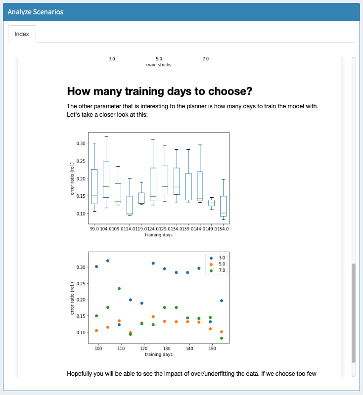

Custom analysis scripts have been deprecated as of MIRO 2.12. Please use custom renderers, custom input widgets and custom comparison modules instead as these alternatives are much more flexible. If you are using custom analysis script and don't want them to be removed from MIRO, please contact support@gams.com.
Scenario Analysis
Introduction
DEPRECATED!
MIRO allows you to run custom analysis scripts. These scripts have to generate HTML or Markdown output which will be displayed in the interface once the script finished. Scripts need to be placed in a folder called scripts_<modelname>; this is also where MIRO executes them (important when you use relative paths in your script).
Note:
All software needed to run the script must be installed on the client's machine and added to the PATH, as it is not part of a MIRO application.
Individual Scenarios
Analysis scripts configured for individual scenarios will
appear as a new tab in the output data section. When the
user runs your script, MIRO saves the data of the current
scenario in a gdx file called
data.gdx in:
scripts_<modelname>. Your
script can then read and analyze this data and produce
output in the form of a single HTML or Markdown file.
This file will be loaded and displayed in MIRO once your
script finished. Script results are stored in the
database as part of a scenario. This means that when you
load a scenario (either to compare it with other
scenarios or to modify it), the script results are loaded
as well.
Please have a look at the following example of an
analysis script for batches of scenarios to learn how to
include a script using the Configuration Mode.
Batch Analysis
Custom scripts can be used to run analyses on multiple scenarios at once from the Batch Load module. Let's consider the example that comes with the pickstock model: a Jupyter Notebook that tries to answer high-level questions like "How many training days should I use" and "How many stocks should I choose". You can find this script in scripts_pickstock/hcube_analysis.ipynb. First, we have to tell MIRO that we want to use a custom analysis script. The Configuration Mode allows us to set everything up:
Each script has to have a unique identifier. The identifier is only used internally and should not be changed. What's displayed in the user interface is the script alias. The command to run is "jupyter", because we want to run a Jupyter Notebook. Note that in order for this to work, Jupyter needs to be installed on the client's machine and added to the PATH.
Info:
For more information on how to set up the Python environment required to run this example and make MIRO aware of it, see here.
Jupyter allows us to run and convert our notebook to HTML. In order to do so, we specify the relevant arguments. The resulting call would be: jupyter nbconvert --to html --execute hcube_analysis.ipynb.
Now that we set everything up, we can start testing our script. We select a few scenarios that we want to analyze, and click on "Analyze". The following dialog opens:

We select the script we want to run and click on "Start script". MIRO will now generate GDX containers with the data for each scenario you selected to be analyzed and store them inside: scripts_<modelname>. Additionally, MIRO writes a file: hcube_file_names.txt. This file simply lists the filenames of the gdx containers to be analyzed (separated by a newline). Once the script finished, the results are read by MIRO and displayed:
